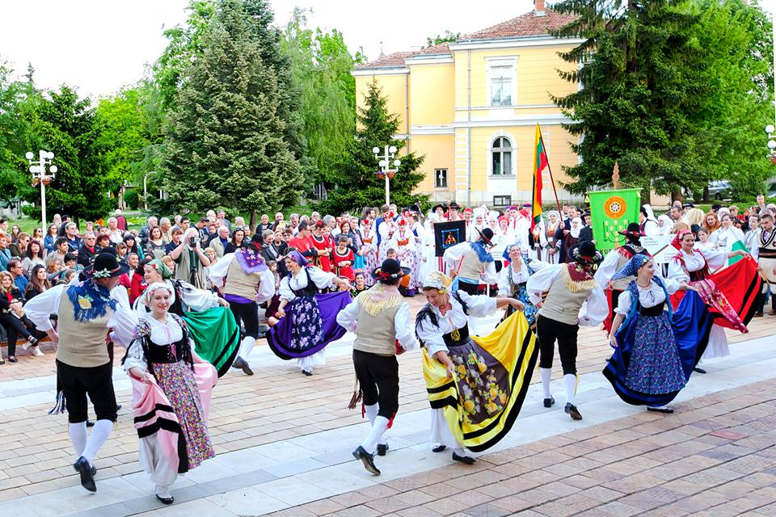

Международен фолклорен фестивал "Врачанска пролет". Провежда се в периода 28 април – 1 май в Народно
читалище “Развитие”, както и на открити сцени в града. Гостуват танцови състави от цял свят – Русия,
Гърция, Италия, Казахстан, Хърватска, Беларус, Литва, Украйна, Индонезия и др. Фестивалът е член на
ЦИОФФ – Международна организация на танцовите фестивали. Всяка година по традиция преди започването на
фестивала, учатниците дефилират по главната пешеходна зона в града.